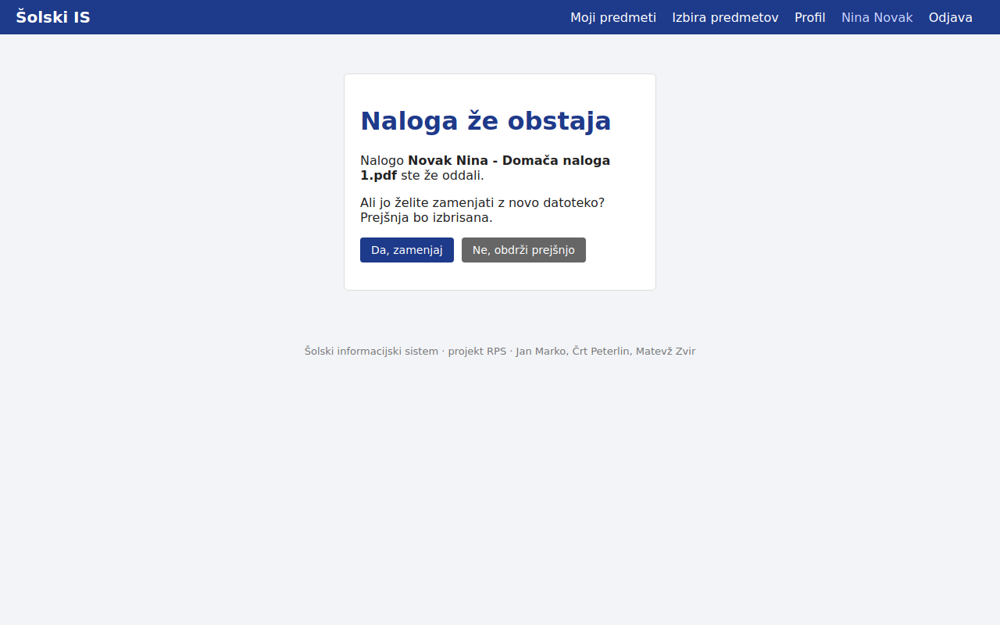
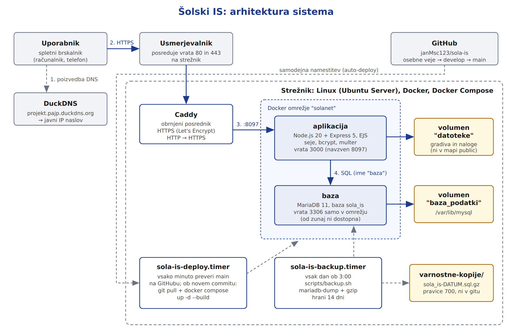

| Predmet: | RPS, Računalniški produkti in storitve |
| Obdobje: | 12. 10. do 30. 10. 2026 |
| Člani: | Jan Marko (vzdrževalec IS), Črt Peterlin (razvijalec), Matevž Zvir (razvijalec) |
| Repozitorij: | https://github.com/janMsc123/sola-is |
| Aplikacija: | https://projekt.pajp.duckdns.org |
testiranje.md in napisal to poročilo.Vsak testni primer ima opis, pričakovani rezultat, dejanski rezultat in status. Celoten seznam je v dokumentacija/testiranje.md.
| Področje | Testov | Uspešnih |
|---|---|---|
| Skupno (prijava, 404, dostop brez prijave) | 7 | 7 |
| Administrator (CRUD, validacija, iskanje) | 18 | 17 |
| Učitelj (gradiva, naloge, pravice) | 10 | 10 |
| Učenec (registracija, predmeti, oddaja, profil) | 20 | 18 |
| Varnost (gesla, izbrisan uporabnik) | 2 | 1 |
| Oblikovanje (telefon) | 2 | 2 |
| Skupaj | 59 | 55 |

| Issue | Test | Napaka | Stanje |
|---|---|---|---|
| #4 | T45 | Oddaja naloge z zelo dolgim naslovom (nad 230 znakov) vrne napako 500, ker je ime datoteke predolgo. | odprta |
| #5 | T55 | Uporabnik, ki ga administrator izbriše med prijavo, dobi napako 500 namesto odjave. | odprta |
| #6 | T56 | Po brisanju predmeta, učitelja ali učenca datoteke ostanejo na disku. | odprta |
| #7 | T52 | Ponovna oddaja po spremembi imena v profilu ne vpraša za potrditev. | odprta |
Vse najdene napake so robni primeri. Nobena ne preprečuje običajne uporabe; vse zahteve iz navodil delujejo.

| Dokument | Vsebina |
|---|---|
namestitev.md | arhitektura, namestitev, .env, vsebniki, Caddy in HTTPS, varnost, auto-deploy, varnostne kopije, zgradba aplikacije, vzdrževanje, odpravljanje težav |
uporabniska-navodila.md | prijava ter navodila za administratorja, učitelja in učenca z zaslonskimi slikami |
testiranje.md | 59 testnih primerov z rezultati in zaslonskimi slikami |
arhitektura.png | diagram arhitekture |
skice-wireframe.pdf | skice vseh treh pogledov |
Odprava napak #4 do #7, končno testiranje na javni domeni, pregled kode in odstranitev nepotrebnih delov, predstavitev projekta, zaključno poročilo ter oznaka končne različice (v1.0).